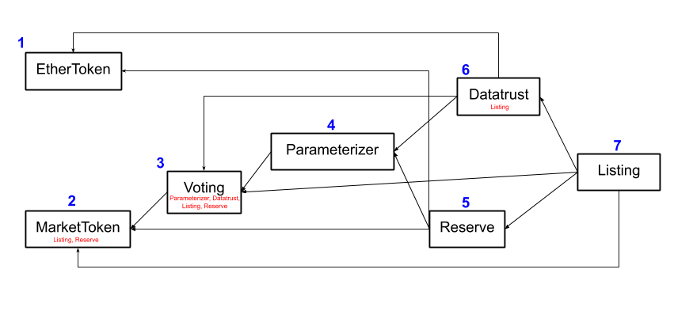

The Computable Contracts
In this chapter , we’ll briefly review the smart contracts that form the core of the Computable protocol. If you haven’t encountered smart contracts before, you might not have a clear idea of what they are. Briefly put, they are programs that run on the Ethereum blockchain. You might ask, why is this important? How is it different from just running a program on the cloud? The main difference is that smart contracts run in duplicate on every one of the thousands of nodes that constitute Ethereum. This means that a smart contract is effectively a program that is guaranteed to execute correctly, since there are enough honest nodes on Ethereum that fraudulent execution will be caught. This means that smart contracts are incredibly robust programs that can be invoked by anyone who has network access to Ethereum.
This robustness means that smart contracts are often used to handle financial transactions. Ledgers of all sorts are run on Ethereum. The most famous examples of such ledgers is probably ERC-20, a standard for “tokens.” Tokens are a type of currency, where the ledger “on-chain” (on Ethereum that is) stores the current balances of every person who owns some “tokens.” It’s worth noting that smart contracts on Ethereum are Turing-complete, so more complex programs can be implemented via smart contracts as well. In fact, Computable is implemented as a series of smart contracts on Ethereum. Computable’s contracts are considerably more complex than simple ERC-20 contracts, so we’ll spend the next few chapters reviewing these contracts in detail.
A Rapidfire Overview of the Computable Contracts
The stable version of the Computable contracts lives in the Computable repo. These are the tested, hardened versions of the contracts and are only updated for major releases. The developer version lives in the Goest repo. We’ve built a number of developer utilities in there, including a custom testing framework that integrates closely with Geth’s tooling to provide a believable simulator engine. If you’ve ever wondered how to compile, deploy and test your Vyper smart contracts (Vyper is a language for writing smart contracts) with an alternative to popular Javascript frameworks, this is how we do it.
The “data market” itself is split across a series of 7 core contracts. You might ask why we didn’t just create one monolith contract that implements the data market. Well, monoliths don’t scale. As complexity grows it would be harder and harder to devise abstractions and permissions controls. More importantly however (and this you may not know) there is a ~24 kb limit on the size of a smart contract on the EVM (the Ethereum virtual machine, the “processor” that runs on Ethereum). There are more reasons, but most are simply based around the proper design of good software. We can save those discussions however for elsewhere in the developer forums.
The on-chain components of the Computable protocol control economics and access control. If a user wants to gain access to a particular dataset (in a particular data market), or if a user wants to support a particular data market, they have to seek on-chain authorization. If a user wants to pay for access to data, this is also done off-chain. The advantage of this structure is that payments and authorization can be handled securely by secure on-chain contracts.
The contracts are interlinked in the following fashion

In this diagram, arrows correspond to dependencies. An
outgoing arrow indicates that this contract is
dependent on the contract on the other end. The
contracts are numbered such that contract i is not
dependent on contract j for j > i. We’ll discuss the
contracts in order:
EtherToken: This contract is a form of wrapped Ether. It wraps ETH into an ERC-20 interface that makes it easy to work with. The first step for working with the data market protocol is to transfer some ETH into EtherToken.MarketToken: This contract is an ERC-20 that tracks ownership in the current data market.Voting: This contract governs voting in the data market. Recall that votes control a number of critical operations in the protocol, such as the decision of whether to admit a new listing to the market, and whether to change the core parameters that govern the market.Parameterizer: This contract governs the set of parameters which control the market’s behaviors.Reserve: This contract governs the data market’s reserve. In particular, this contract exposes the “algorithmic price curve” which governs how patrons can support and withdraw from the market.Datatrust: This contract governs the interaction of the datatrust with the core market. In particular, the “delivery flow” which controls how data is purchased is handled by this contract.Listing: This contract governs the addition of new chunks of data (“listings”) into the data market.
Don’t worry if you didn’t follow all that. The next several chapters will dive into each of these smart contracts in much greater detail.
You might notice that some of the contracts have other
contract names specified in small red font underneath.
These contracts have “privilege” in the current
contract. Contracts with privilege have the ability to
call certain special methods in the current contract.
For example, Listing and Reserve have privilege with
the MarketToken contract. Precisely, this means that
these contracts have the ability to mint and burn
MarketToken. This privilege structure is needed to
implement the algorithmic buy/sell curve for patrons.
As you’re reading through the contracts, you might find
it useful to keep this privilege structure in your head
so you can understand how the set of contracts
interlocks with one another. It is also worth noting
that the privilege mechanism serves in a security role
as well, preventing random accounts from having the
ability to perform certain actions (like mint tokens).
As we mentioned above, one of the differentiating factors of our implementation is that we’ve chosen to use Vyper for our contract implementation instead of Solidity (the most popular smart contract development platform). There were a number of factors that drove this choice. For one, the fact that Vyper defaults to safe math made our implementation of the algorithmic price curve dramatically simpler (you’ll learn what these terms mean in detail). Although Vyper is still beta software, we’ve found that it’s well written, well maintained and well suited to our efforts.
Last Thoughts
This chapter gave you a high level overview of all the
Computable contracts. In the next chapter, we’ll go
much deeper on the first of these contracts, the
EtherToken.
 Jul 15, 2019
Jul 15, 2019
 Edit this page
Edit this page